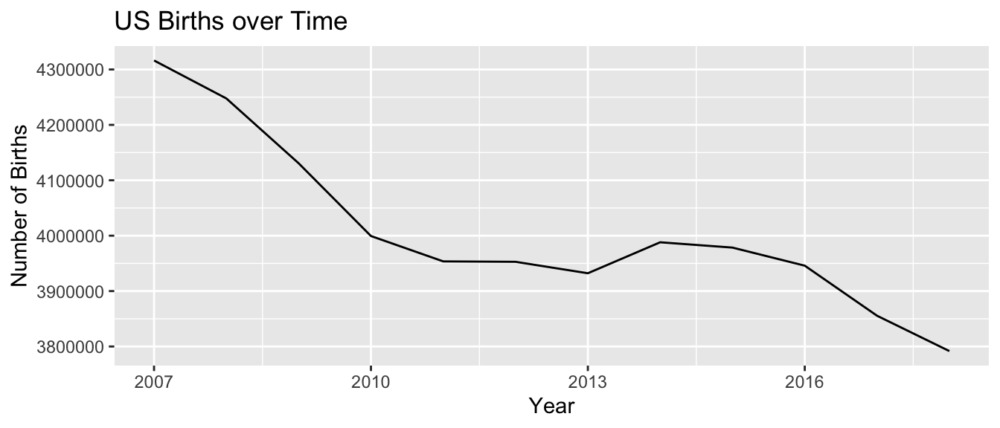
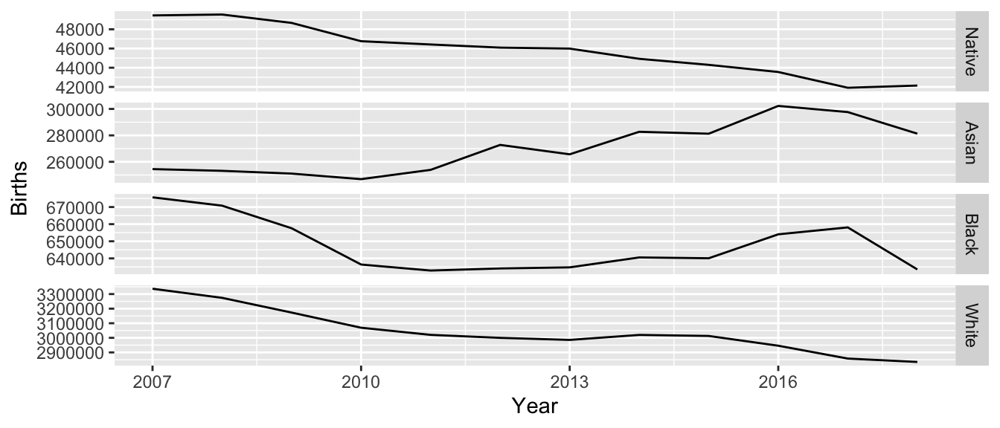
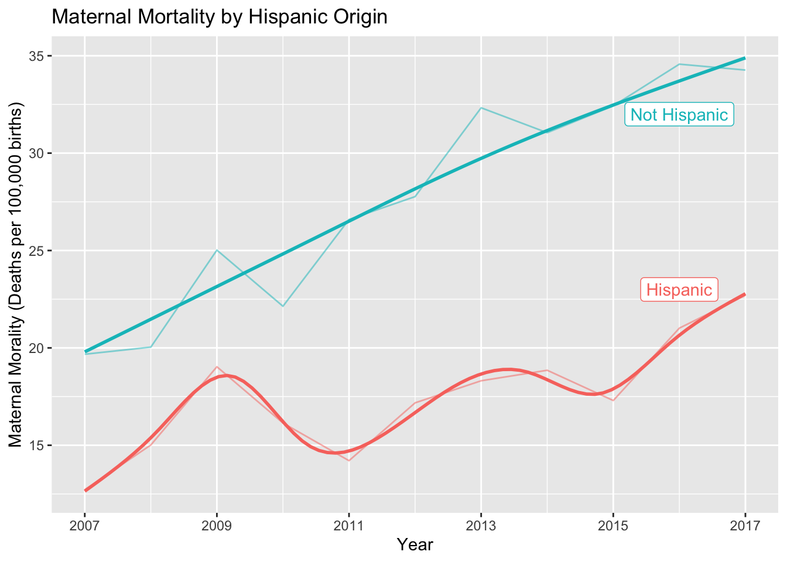
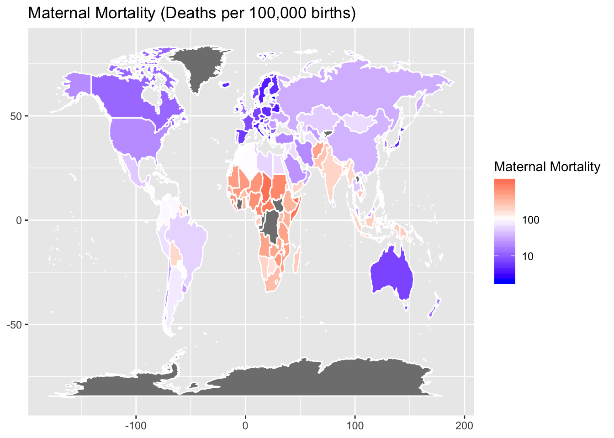
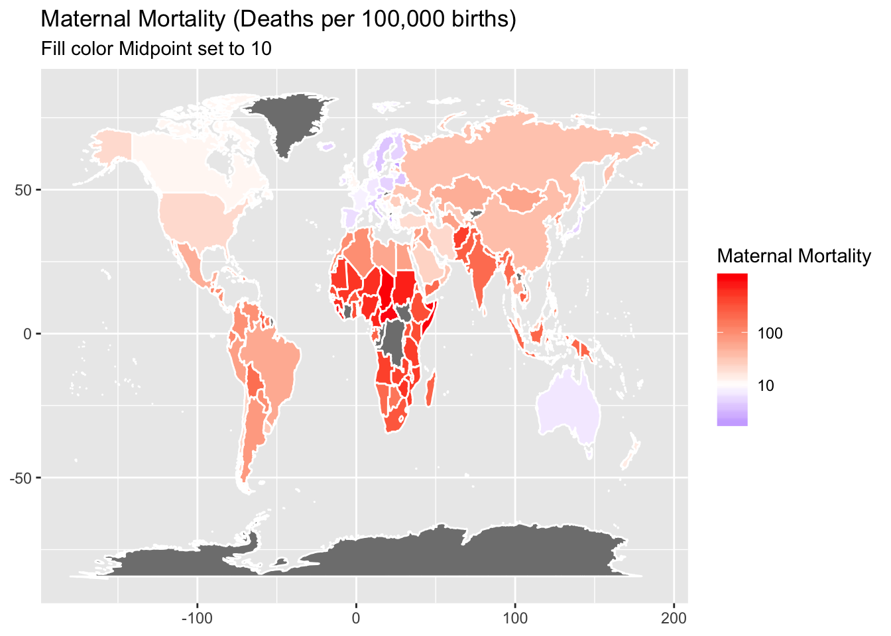
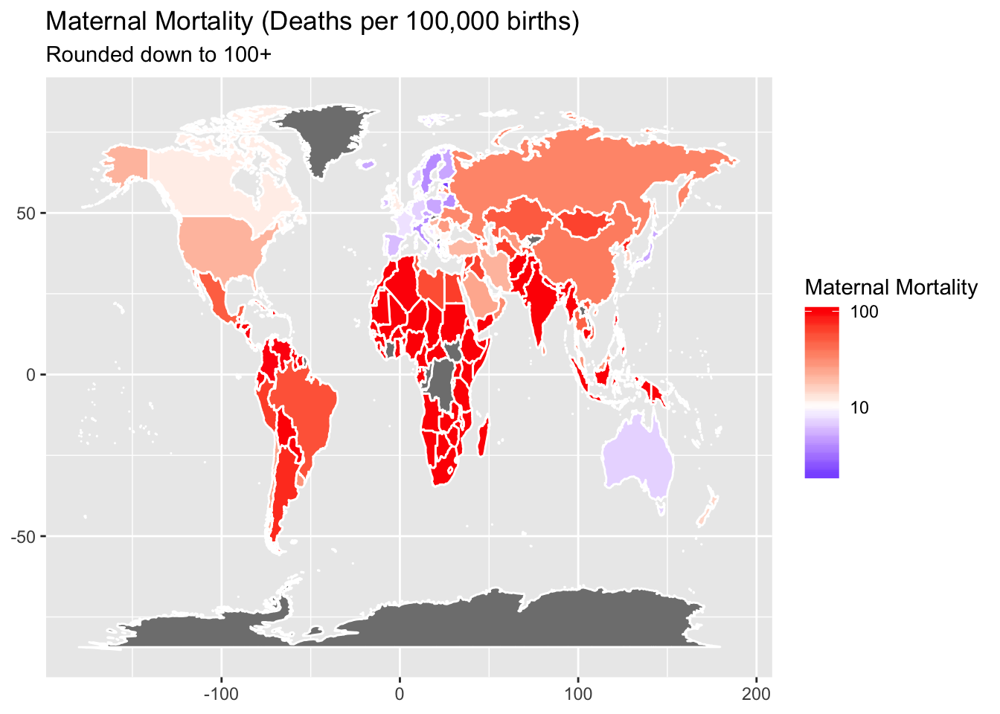

Chapter 7 Week 7
7.1 Maternity Deaths
Suppose that we are interested the mortality rates that women experience related to pregnancy and birth.
Step One: Variable of interest Clearly we want to have some sort rate adjustment to account for different population sizes. However, because not all women give birth, we shouldn’t just consider all women. Instead we’ll consider this maternal deaths per 100,000 live births.
Step Two: Context Approximately 700 women per year die due to complications of pregnancy or child birth in the United States. This turns out to be ~17.2 deaths per 100,000 births, or about 1 maternal death per 5,000 live births.
Step Three: Conditional Statistics - How does this vary between countries? - How does this vary between states? - How does this vary between socio-economic or ethic groups?
7.1.1 Step Four: Finding Data
- Typically it is easy to google for a single statistic for a country. However, it is often difficult to find a dataset that allows for the conditional statistics, such as between states or ethnic groups.
- I found data from the Centers for Disease Control.
Maternal Deaths: The CDC’s Wonder on-line access allows you to format data requests for a wide variety of scenarios. - Tried to get Maternal Deaths by State by Year. However, the CDC won’t release that. The reason is that from an ethical standpoint, government cannot risk exposing information for any individual. So all government agencies will only release data that has been aggregated to a point where they are certain that individuals cannot be identified. - Year by race? That was successful.
## # A tibble: 6 x 6
## Race Year Deaths Population `Crude Rate` Hispanic
## <fct> <dbl> <dbl> <dbl> <chr> <fct>
## 1 Native 1999 1 564085 Unreliable Hispanic
## 2 Native 2001 1 736712 Unreliable Hispanic
## 3 Native 2005 1 1101386 Unreliable Hispanic
## 4 Native 2007 1 1327365 Unreliable Hispanic
## 5 Native 2010 1 1693971 Unreliable Hispanic
## 6 Native 2011 1 1748621 Unreliable HispanicHow do we get number of births? Again we get information from the CDC Wonder data base access.
## # A tibble: 6 x 6
## Year Births `Average Birth Weig… `Average Age of Moth… Race Hispanic
## <dbl> <dbl> <dbl> <dbl> <fct> <fct>
## 1 2007 5819 3282. 25.0 Native Hispanic
## 2 2007 42890 3320. 25.1 Native Not Hispa…
## 3 2007 734 3294. 25.4 Native Unknown
## 4 2007 9188 3241. 26.5 Asian Hispanic
## 5 2007 242046 3187. 30.3 Asian Not Hispa…
## 6 2007 3254 3198. 30.1 Asian Unknown7.1.2 Univariate Exploratory Graphing
I can’t help but look at how the birth numbers in the US have changed over time. 
Finally we can calculate Deaths per 100,000 births.


Finally we’ll look at US vs rest of the world.
